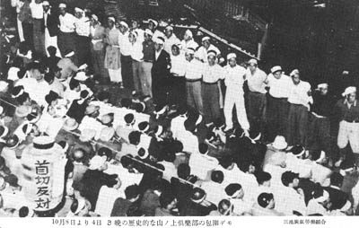

絵はがき袋の表
三池炭鉱労働組合発行の三池争議関連絵はがき（8枚組袋入り）。
昭和28年8月7日、三井鉱山は鉱員5738人（うち三池関係1722人）の希望退職者募集を発表。その結果、全山
で696人が退職したが、2768人は拒否。結果、指名解雇が通告され、9月より首切り反対闘争が展開されていった。
これを「企業整備反対闘争」と呼び、113日にわたる家族ぐるみの闘争が展開され、同年12月5日、ついに会社側は
指名解雇を撤回せざるを得なくなって組合側の勝利となった。これが別名「英雄なき113日の闘い」とも言われた。
袋の裏には「正常なる労使のルールを蹂躙し、不法にも組合の弱体化と資本の利益追求のみを企図した三井鉱山
五千余名の首切りに対し五万の労働者と二十万家族は血の一滴までも傾け盡した斗争を展開している。秋の日に
顔をやき、寒空に幼児を抱き乍ら官憲の弾圧にもめげず会社の不誠意を追及し続けて既に九十日。此の斗いこそ、
全労働者の首切りに繋り、平和への途である事を信じて疑はない 三池炭鉱労働組合」とある。
これら絵はがき作成の目的は、同組合員はもとより、主に全国の支援労組から資金カンパを得るために頒布されたもの
ではないかと思われる。
拒否者代表の帰山を迎え大牟田駅前の歓迎デモ 三池炭鉱労働組合
首切り辞令は返上だ 棺桶や樽に詰めて座込み 三池炭鉱労働組合
父ちゃん、兄ちゃんの首を切るな 三池炭鉱労働組合
父ちゃんの背で首切り反対を叫ぶ 三池炭鉱労働組合
9月4日首切り辞令を返上に雨中に8時間デモる 三池炭鉱労働組合

10月8日より4日3晩の歴史的な山ノ上倶楽部の包囲デモ 三池炭鉱労働組合
首切りの後は労働強化だ 二番方昇坑者は鉱長室前でデモる 三池炭鉱労働組合
炭労から三鉱連を経て1000万円のカンパ届く 三池炭鉱労働組合